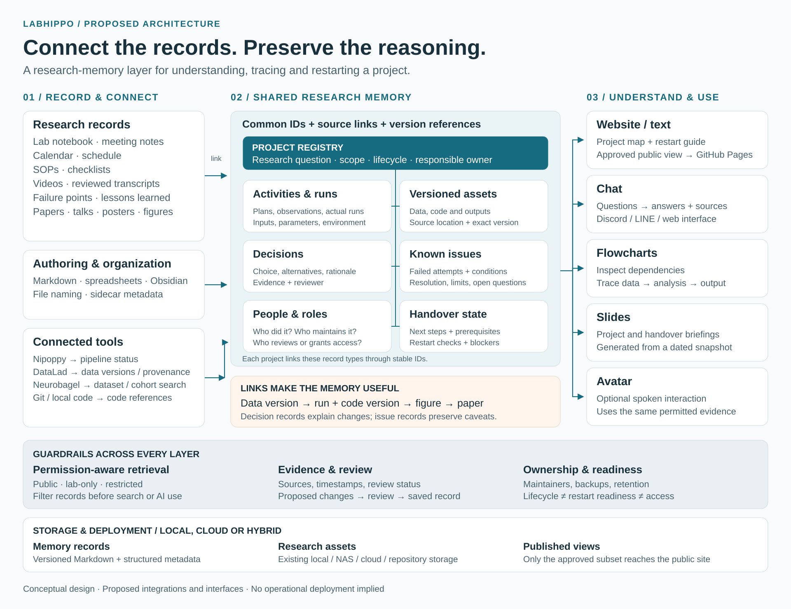
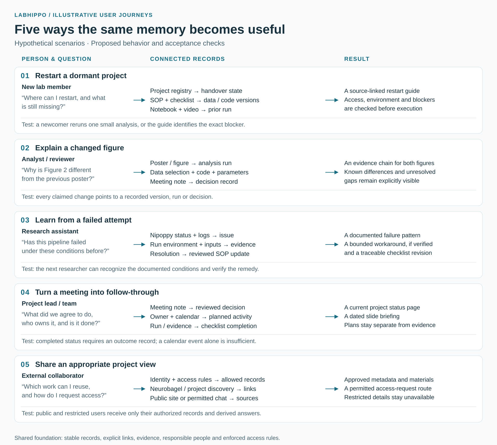

系統架構
研究紀錄與工具 → 共同研究記憶 → 使用者介面；權限、審閱、管理責任與儲存方式適用於整個系統。



五個使用情境
新成員接手專案、分析者追溯圖表、研究助理查找失敗經驗、團隊追蹤會議決議，以及外部合作對象查詢可用材料。

完整架構圖串起研究紀錄、工具、共同研究記憶與使用者介面。五個情境說明這些元件如何支援實際研究工作。圖中文字保留英文。
以下為設計構想與假設情境，尚非已部署系統。
研究紀錄與工具 → 共同研究記憶 → 使用者介面；權限、審閱、管理責任與儲存方式適用於整個系統。

新成員接手專案、分析者追溯圖表、研究助理查找失敗經驗、團隊追蹤會議決議，以及外部合作對象查詢可用材料。
